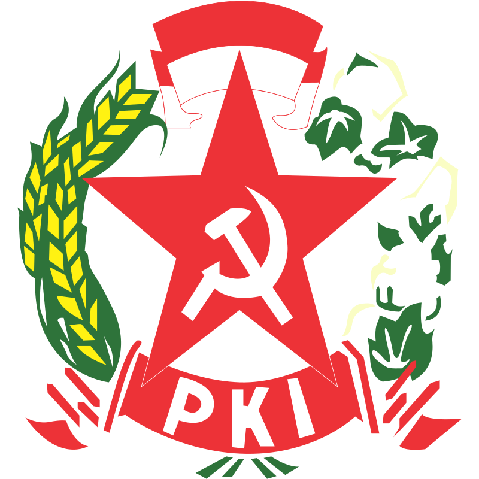
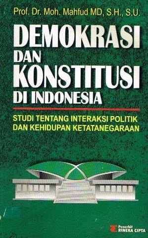
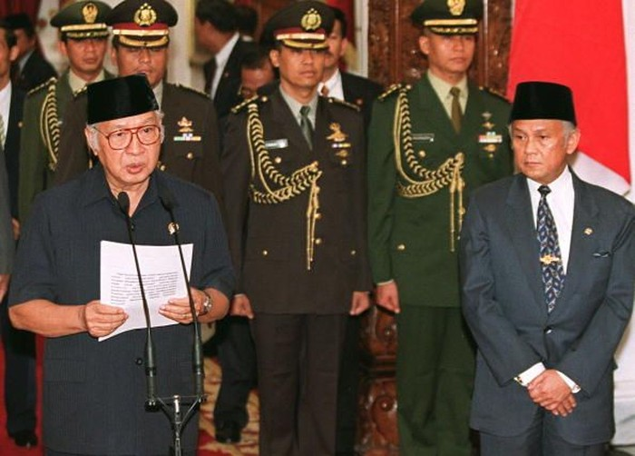
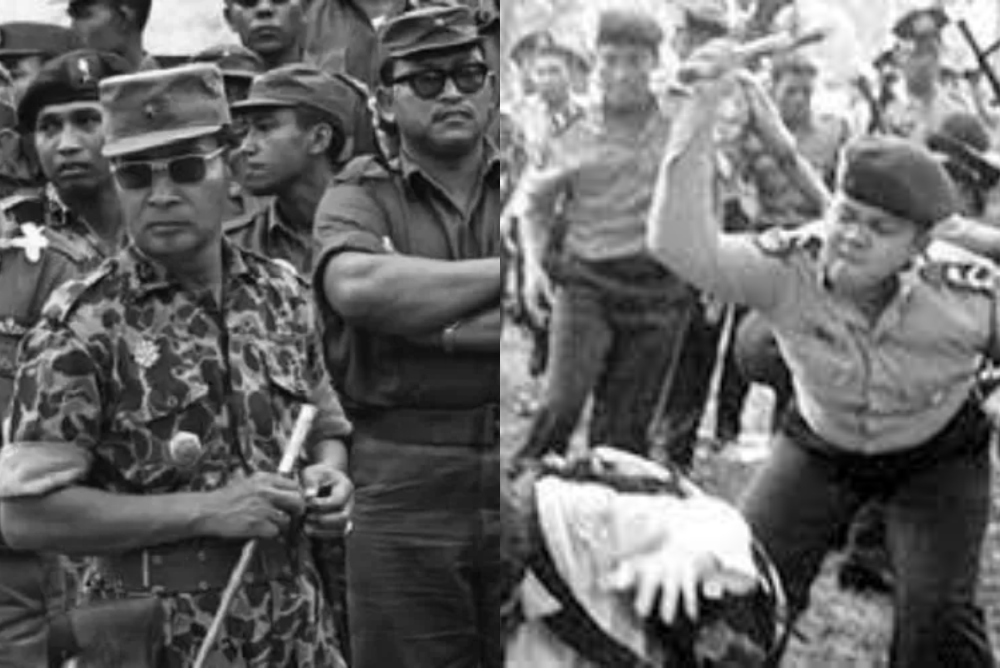

Demokrasi Pancasila
(1966-1998)
|
Demokrasi Pancasila merupakan konsep demokrasi yang dipopulerkan oleh Orde Baru pada masa kepemimpinan Soeharto (1966-1998). Istilah Demokrasi Pancasila lahir dari pemikiran kontra terhadap konsep Demokrasi Terpimpin masa Soekarno (1959-1965). Secara tidak langsung, pemberlakuan Demokrasi Pancasila pada masa Orde Baru adalah upaya deligitimasi konsep Demokrasi Terpimpin Soekarno. Terbitnya Surat Perintah Sebelas Maret (Supersemar) pada 1966, menjadi penanda pelaksanaan Demokrasi Pancasila masa Orde Baru. |
Visi utama pemerintahan Orde Baru ini adalah untuk melaksanakan Pancasila dan UUD 1945 secara murni dan konsekuen dalam setiap aspek kehidupan masyarakat Indonesia. Dengan visi tersebut, Orde Baru memberikan harapan bagi rakyat Indonesia. Terutama yang berkaitan dengan perubahan-perubahan politik. Perubahan politik dari yang bersifat otoriter pada masa demokrasi terpimpin di bawah Presiden Soekarno menjadi lebih demokratis pada Orde Baru. |
|
Rakyat mempercayai pemerintahan Orde Baru di bawah kepemimpinan Presiden Soeharto dengan alasan-alasan sebagai berikut:
|
 | |
|
Namun, harapan masyarakat itu tidak sepenuhnya terwujud. Sebabnya, tidak terjadi perubahan substansial dalam kehidupan politik Indonesia. Kedua, baik Orde Baru maupun Orde Lama pada dasarnya memiliki ciri otoriter yang serupa. Selama pemerintahan Orde Baru, kekuasaan Presiden menjadi pusat dari seluruh proses politik di Indonesia. Institusi kepresidenan berperan sebagai pengendali utama terhadap lembaga negara lain, baik yang bersifat suprastruktur (DPR, MPR, DPA, BPK, dan MA) maupun infrastruktur (LSM, Partai Politik, dan sebagainya). Soeharto memegang legitimasi yang tidak dimiliki oleh siapapun, seperti Pengemban Supersemar, Mandataris MPR, Bapak Pembangunan, dan Panglima Tertinggi ABRI. Dengan demikian, pelaksanaan demokrasi Pancasila masih jauh dari harapan. Nilai-nilai Pancasila hanya dimanfaatkan sebagai alat politik oleh penguasa. Faktanya, pelaksanaan Demokrasi Pancasila tampaknya setara dengan kediktatoran. |
 |
Dalam buku Demokrasi dan Konstitusi di Indonesia : Studi tentang Interaksi Politik dan Kehidupan Ketatanegaraan (2003) karya Mahfud MD, disebutkan bahwa Demokrasi Pancasila mengutamakan musyawarah untuk mufakat. Pemimpin tidak diberi hak untuk mengambil keputusan sendiri ketika ‘’mufakat bulat’’ tidak tercapai, melainkan melalui voting (pemungutan suara). Hal tersebut sangat bertolak belakang dengan konsep Demokrasi Terpimpin masa Soekarno yang mengatur tentang peran pemimpin yang diperbolehkan mengambil keputusan ketika mufakat tidak tercapai. Pada 16 Agustus 1967, Presiden Soeharto memberikan pengertian bahwa Demokrasi Pancasila adalah demokrasi berkedaulatan rakyat yang dijiwai dan diintegrasikan dengan sila-sila dalam Pancasila. Demokrasi Pancasila juga mengatur adanya hubungan yang harmonis antar eksekutif dan legislatif, sehingga keseimbangan yang wajar antara konsensus (kesepakatan) dan konflik akan tercipta. Oleh karena itu, Lembaga eksekutif dan legislatif cenderung tidak bisa saling menjatuhkan. |
Penyebab kegagalan implementasi Demokrasi Pancasila dapat diatributkan pada sejumlah permasalahan dalam praktik kenegaraan
dan pemerintahan, seperti yang diuraikan dalam jurnal ilmiah "Demokrasi dalam Sejarah Ketatanegaraan RI" (2014) karya Arif
Wijaya.
Demokrasi Pancasila mengalami kemunduran bersamaan dengan runtuhnya rezim Orde Baru pada tahun 1998. Krisis ekonomi, pelanggaran hak asasi manusia (HAM), dan praktik korupsi, kolusi, dan nepotisme (KKN) yang merajalela, merongrong fondasi Indonesia dan memicu gelombang protes massa pada pertengahan dekade 90-an, yang menyerukan perlunya reformasi. Pada tanggal 21 Mei 1998, Soeharto mengundurkan diri dari jabatan presiden, dan memberikan mandat kekuasaannya kepada BJ Habibie. |
 Presiden Soeharto mengundurkan diri dan di ganti BJ Habibie mengakhiri masa Orde Baru. (foto: dok istimewa)  Ilustrasi - Sejarah pendirian Komnas HAM. |